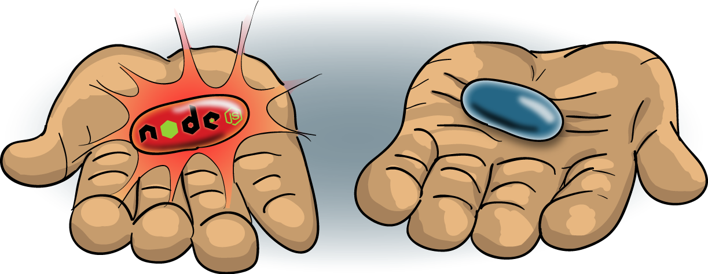

Relaunching mobile.de
with Node.js and ES6

29th eBay Tech Talk in Berlin, Germany
Patrick Hund, software developer at mobile.de
- 9 weeks
- 7 engineers
- 10.81M visitors / month*
- ~300 requests / second
* AGOF Digital Facts 2015-06
Why?
Universal JavaScript
Lessons Learned
Bad Example – do not do this!
config.js
export default {
serviceUrl: "http://my.service/endpoint",
timeout: 1000
}
service.js
import config from "config";
import axios from "axios";
import withTimeout from "withTimeout";
export default () =>
withTimeout(axios.get(config.serviceUrl), config.timeout);
service-test.js (excerpt)
describe("When I call the service", () => {
describe("and the service returns data in time", () => {
before(setup);
describe("the resulting promise", () => {
it("is resolved", () => ok.called.should.be.ok);
it("is not rejected", () => ko.called.should.not.be.ok);
});
after(teardown);
});
describe("and the service times out", () => {
before(setupTimeout);
describe("the resulting promise", () => {
it("is rejected", () => ko.called.should.be.ok);
it("is not resolved", () => ok.called.should.not.be.ok);
});
after(teardown);
});
});
service-test.js (excerpt)
function setupTimeout(done) {
sinon.stub(axios, "get").returns(new Promise(resolve =>
setTimeout(() => {
resolve({
data: "SOME_DATA"
});
}, 2000)
));
ok = sinon.spy();
ko = sinon.spy();
result = service().then(() => {
ok();
done();
}).catch(() => {
ko();
done();
});
}
Good Example
config.js
export default {
get() {
return {
serviceUrl: "http://my.service/endpoint",
timeout: 1000
};
}
};
service.js
import configurator from "./config";
import axios from "axios";
import withTimeout from "./withTimeout";
export default () => {
const config = configurator.get();
return withTimeout(axios.get(config.serviceUrl), config.timeout);
};
service-test.js (excerpt)
function setupTimeout(done) {
sinon.stub(axios, "get").returns(new Promise(resolve => setTimeout(() => {
resolve({
data: "SOME_DATA"
});
}, 10)));
sinon.stub(config, "get").returns({
serviceUrl: "http://my.service/endpoint",
timeout: 0
});
ok = sinon.spy();
ko = sinon.spy();
result = service().then(() => {
ok();
done();
}).catch(() => {
ko();
done();
});
}
{kind=link}

/**
* withArgs.js
*
* Curries a function with additional arguments, which are prepended
* to the arguments passed to the function.
*
* Example:
*
* function foo(a, b, c, d) {
* console.log(a + b + c + d);
* }
*
* let bar = withArgs(1, 2)(foo);
*
* bar(3, 4); // => 10
*
* [ 3, 4 ].forEach(bar); // => 6; => 7
*
*/
export default (...args1) => func => (...args2) => func(...args1, ...args2);
Patrick Hund, software developer at mobile.de
Follow me on Twitter: @wiekatz
Slides available on GitHub: git.io/vWXo1
Visit the eBay Technology blog: technology.ebay.de
Cross stitch headlines made with Photofunia